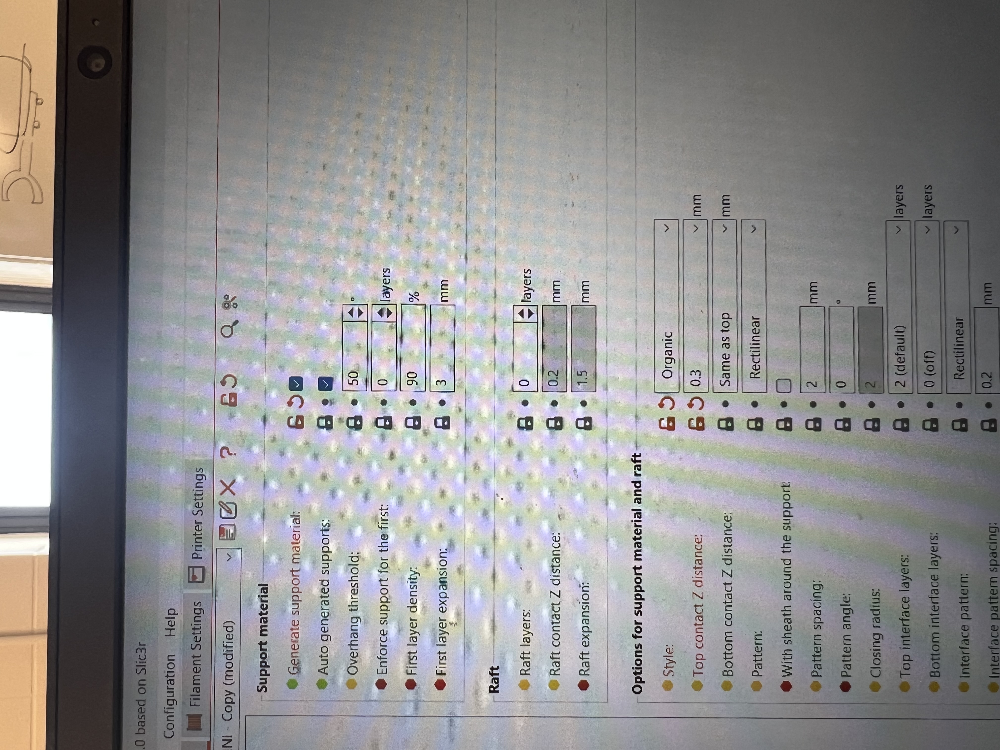
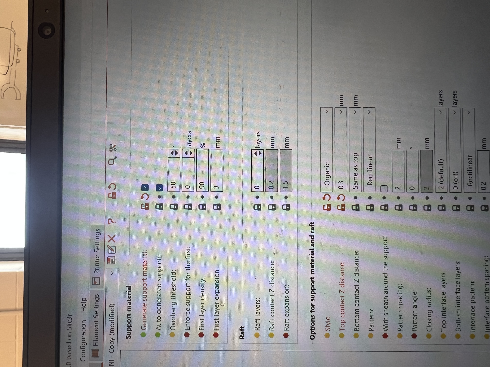
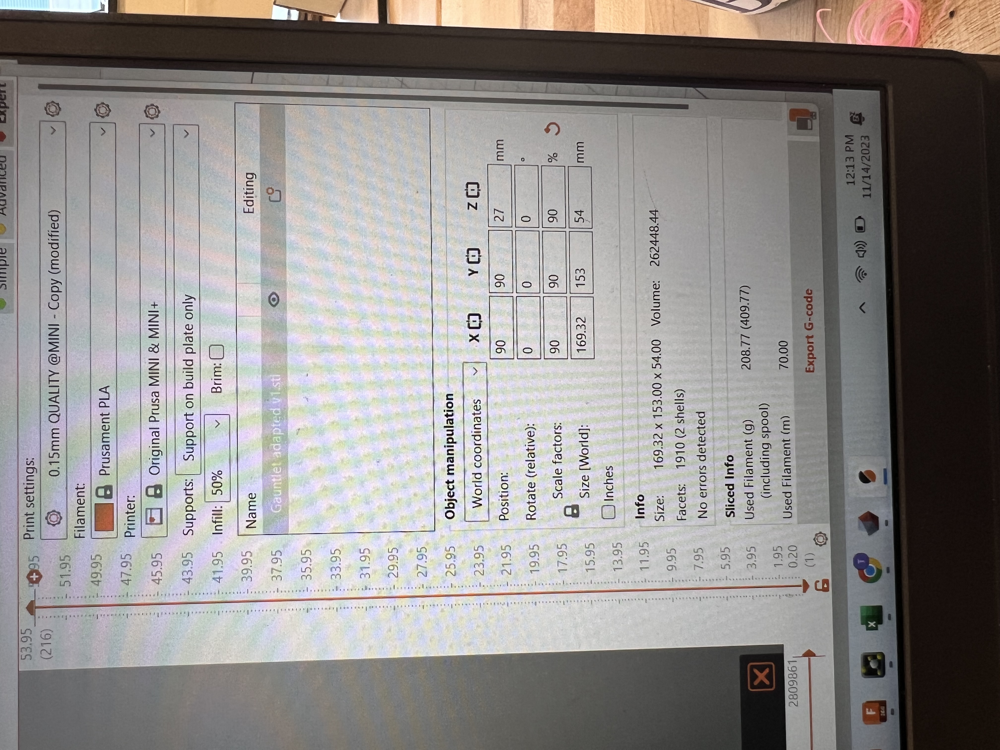
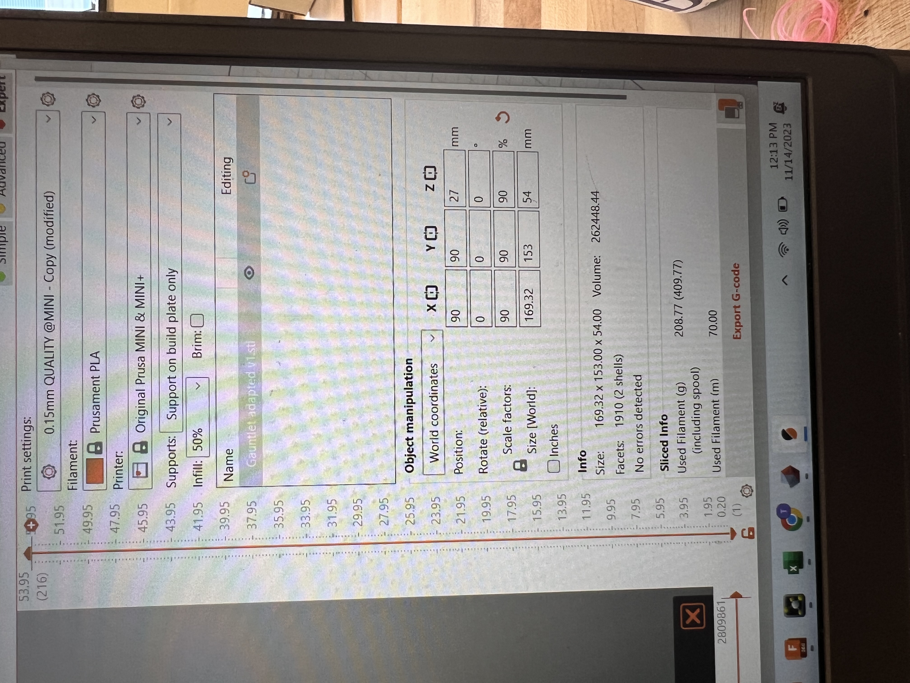

Prototype Idea and Function
Although my team doesn’t have a client, we decided to use the open source designs from one of our meetings to understand how best to design a product that will fit a client comfortably while withstanding forces applied from physical activity such as sports. For this project to be a success, the prosthetic must be a comfortable lightweight fit, allowing the user to participate in physical activity without any major safety concerns or the prosthetic falling apart after one use. Thoughts to make this design work include measurements of both the upper forearm and the lower forearm (so it fits like a glove), removing sharp edges with the “fillet” feature, and using a durable material that isn’t too dangerous when it breaks.

 

Iteration 1: Golf Arm
First we used the Prusa Minis with the CAD design on Thingiverse to 3D print an adapted golf arm upper limb prosthetic. Here we used PLA. This design turned out great. The gauntlet fit my forearm very well, not too snug but not too loose. It also had a very cool toggle latch mechanism to grip the golf club. However, when we used the middle piece to connect the gauntlet to the grip, we had to force it in. Once it was in, it wasn’t coming back out. While this is good that it won’t fall out under the force of a swing, it did not have enough tolerance. Next we stress tested the PLA and it broke fairly easily, just by taking out the supports from the holes. I decided for future prints to use a 0.3 Z distance to make it easier to remove the supports. Using this first prototype as a jumping off point, we learned a lot about the needs for our design and worked to adapt this model.


 


Iteration 2: Adaptation for Bike Riding
One way we tried to really make our own design was through the adaptation of the golf arm for someone to ride a bike. The latch mechanism was very easy to use with one arm, allowing for the user to quickly attach and detach from the bike handle. So we decided to keep the model for the grip and latch the same. What really had to be adapted was the angles of the gauntlet and the grip. When swinging a golf club, your wrist is bent downwards at about a 45 degree angle, holding the golf club downward to line up with the ball. However, when riding a bike, you want your wrist to be straight allowing the handle to be held perpendicular to the wrist. First I attempted to use the software Rhino with the original CAD golf design gauntlet, to curve the mesh, making the hole where the hand goes 90 degrees. But doing this only morphed the shape of the hole, so the grip with the connector could not fit with the gauntlet. So I decided to design the gauntlet from scratch. Making the gauntlet itself was fairly easy. I learned how to make it so the bottom of the gauntlet would fit the wider part of the forearm, while getting smaller for the top of the wrist portion. I printed this on the Prusa as a sample to look at sizing although it wouldn't be quite big enough - unfortunately the Raise 3D’s were all taken or under repair at the moment. I had to scale this down to 90% on Prusa Slicer. The biggest struggle was making the hole shape in the gauntlet. First, I imported the connector in a separate file, however it was in mesh form. I went to “prepare” then “generate faces”, this allowed me to reduce the number of triangles and then I could convert the mesh to a solid, without the hassle of importing into meshmixer, reducing, then exporting it back into Fusion. I learned a super cool feature of Fusion in which I could import the connector file into the file of my gauntlet design. Next, I snapped the face of the connector onto the plane of the gauntlet and was able to cut it out of the design to create a “hole and pin” model. We are in the process of printing this in PLA again, however at 100% scale on the Raise this time, to check the fit with the connector before using a more expensive material like nylon.


Iteration 3: NinjaFlex
One tip we got during our meetings was where we should use different materials. Specifically, the connector between the hand grip and the gauntlet. The original designer of the golf arm explained that this piece would act as the wrist, and should therefore have some give. He suggested the use of NinjaFlex. We took the CAD design straight from Thingiverse and printed the piece in the Ninjaflex. It fit well with the hand grip, however, we couldn’t see how it fit in the gauntlet as the PLA one was stuck in the hole already. Once my gauntlet design is printed, we will check if the hole matches the pin, hopefully we’ll be able to put the entire design together to test it out on a bike! We also had originally tried a Ninjaflex Phoenix Hand to understand how the Ninjaflex works. We used an infill of 80%, however, since the walls were so thick, it wasn’t very flexible. For the connector we used a 50% infill to keep it lightweight and allow for some give and flexibility. It also was able to fit into the PLA hand grip very well. Overall, I was very happy with the Ninjaflex for the wrist connector piece.


Nylon
Once we had our PLA parts, we decided we should try a prototype in Nylon, a stronger, more durable material than PLA. We thought about using PETG, since it is even stronger, however, when this broke it made sharp edges which we felt would be unsafe for a client. If they were to have an accident while riding a bike, we wouldn’t want their prosthetic to puncture their skin and injure them. To save on printing material and time, we only printed the grip part of the prosthetic. Although the print was not the cleanest, we really liked the nylon material. The latch had more friction, allowing for it to be more secure than the slippery PLA material. Next we need to stress test this when actually riding a bike, but we are waiting for our adapted gauntlet to be printed to fit the connector. I will say, the Nylon is just black, which was not as fun and pretty as our rainbow PLA. But I think the tradeoffs of safety and durability may be worth it. When we finalize our project, we may try to order a different color of Nylon for the sake of a client.

Reflection
This project was actually a lot of fun for me, looking at pre-existing designs and modeling them with my own adaptations for functions I have specified. I learned so much about how to use Fusion, skills as both a beginner (slanted lines, fillet, fixing positions) and in a more advanced setting (generating face groups, converting mesh to solid, importing designs into other designs). I also see the importance of thinking through each small piece for a design’s functionality, such as comfort, weight, force, and pressures. I’m excited to continue working and hopefully have a lightweight, form fitting, durable open source bike prosthetic adapter by the end of this semester!